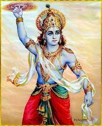

परिचय
कृष्ण का जन्म भाद्रपद मास में कृष्ण पक्ष में अष्टमी तिथि, रोहिणी नक्षत्र के दिन रात्री के १२ बजे हुआ था । कृष्ण का जन्म मथुरा के कारागार में हुआ था। वे माता देवकी और पिता वासुदेव की 8वीं संतान थे।
कृष्ण का पालन-पोषण
कृष्ण का पालन-पोषण एक ग्वाल परिवार में हुआ था और वह अपना समय गोपियों के साथ खेलने, उन्हें सताने, परेशान करने, बाँसुरी बजाने आदि में बिताते थे, कृष्ण बहुत ज्यादा शरारती थे। लेकिन वो इतने अधिक मनमोहक थे कि अगर कोई भी माँ यशोदा से उनकी शिकायत करता तो मैया यशोदा विश्वास ही नहीं करती थी। उनका भोला और सुंदर रुप देखकर हर कोई पिघल जाता था।
राधा-कृष्ण का आलौकिक प्रेम
बचपन में राधा के साथ कृष्ण का जुड़ाव अत्यंत दिव्य और आलौकिक था, जो हमारी संस्कृति में बहुत सम्मानित है। राधारानी देवी लक्ष्मी की अवतार थीं।
गोपियो के संग रास
राधा-कृष्ण वृंदावन में रास करते थे। कहते है आज भी वृंदावन के निधी वन में उनकी उपस्थिति महसूस की जा सकती है। कोई भी कृष्ण के दिव्य आकर्षण और अनुग्रह से बच नहीं सकता था। ऐसा कहा जाता है कि एक चांदनी रात में, कृष्ण ने उन सभी गोपियो के साथ नृत्य करने के लिए अपने शरीर को कई गुणा कर लिया था, जो भगवान कृष्ण के साथ रहना और नृत्य करना चाहती थी। यह वास्तविकता और भ्रम के बीच का अद्भुत चित्रण है।
महाभारत का युध्द
कृष्ण अपने मामा कंस को मारने के बाद राजा बने। कुरुक्षेत्र की लड़ाई के दौरान कृष्ण ने सबसे महत्वपूर्ण किरदार निभाया और अर्जुन के सारथी बने। कृष्ण पांडवों की तरफ से थे। कृष्ण ने युद्ध के मैदान में अर्जुन के दोस्त, दार्शनिक और मार्गदर्शक के रूप में अनवरत काम किया। अर्जुन पीछे हट रहे थे क्योंकि उन्हें अपने भाइयों को मारना था और अपने गुरुओं के खिलाफ लड़ना था।